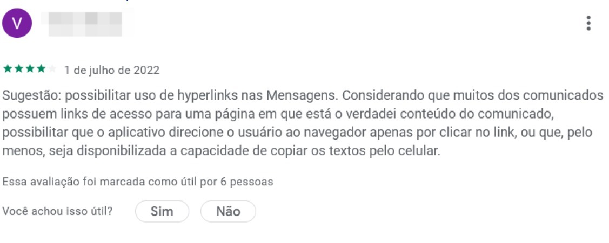
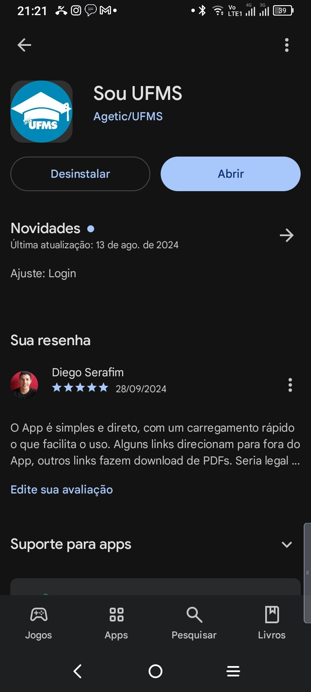

Disciplinas
-
INTERFACE HUMANO-COMPUTADOR Concluído
Materiais
Neste módulo, você aprendeu sobre como avaliar interface e interação com sistemas computacionais.
Uma boa forma de saber o que as pessoas pensam sobre um aplicativo é analisar os comentários recebidos na loja de aplicativos. A partir deles, os desenvolvedores podem saber quais funcionalidades estão atendendo e trazendo boas experiências aos usuários e também receber sugestões de pontos para melhoria e problemas que precisam ser resolvidos.
Olha só esse exemplo:
https://lh7-us.googleusercontent.com/8oiuy4fm9vmY3PyTvtpH5oguTzrYtvNcWJ0u1zYeOWcRHpbh5nLh-eLm4XX7fleG2Ta2mvwwu5-Tc9kxV-G5gMnE84xKUpzS8JvxuT6T6NW9enEQFP_6DoWbSaPgYd9M9pGaCxMlWFaESd4EqLC7Yms
Conteúdo
Fonte: Google Play Store
Neste fórum, convido você, usuário do nosso aplicativo Sou UFMS, a fazer o seguinte:
- Acesse a página do aplicativo Sou UFMS, na loja de aplicativos do seu celular, e faça seu comentário de avaliação.
- Compartilhe aqui um print (captura de tela) do seu comentário e aproveite para ver se suas sugestões estão alinhadas com as dos demais colegas da turma.
Resolução.
O App é simples e direto, com um carregamento rápido o que facilita o uso. Alguns links direcionam para fora do App, outros links fazem download de PDFs. Seria legal poder visualizar as normas diretamente dentro do App, sem precisar baixar os arquivos. Outro.. seria legal a inclusão de uma funcionalidade que mostrasse o andamento do curso, por exemplo, exibir a quantidade de matérias e dos módulos e os semestres, e comparando com o que já foi estudado. Isso ajudaria a ter uma idéia do tempo para a conclusão.
